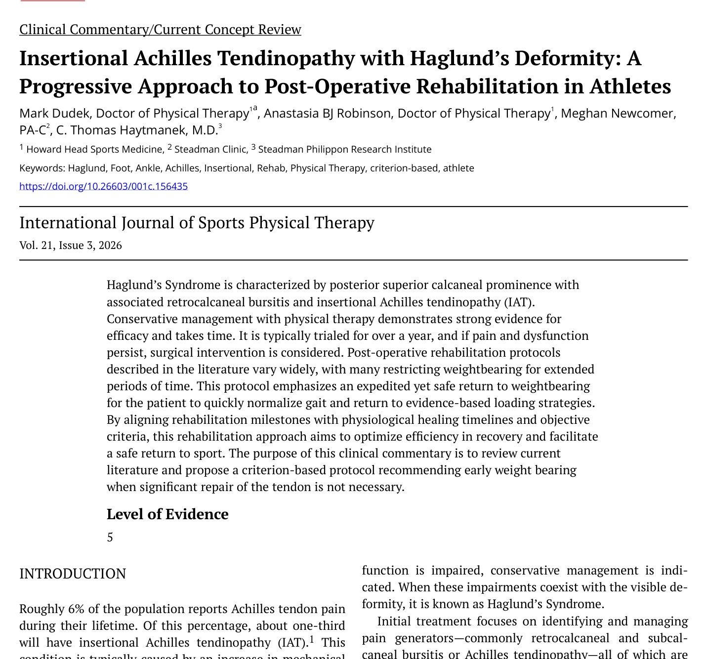
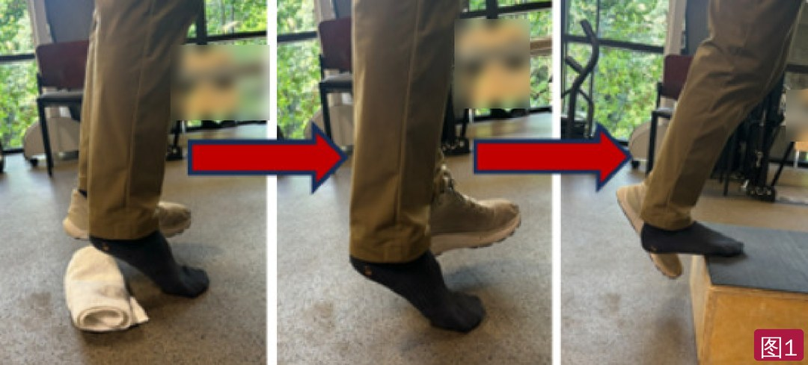
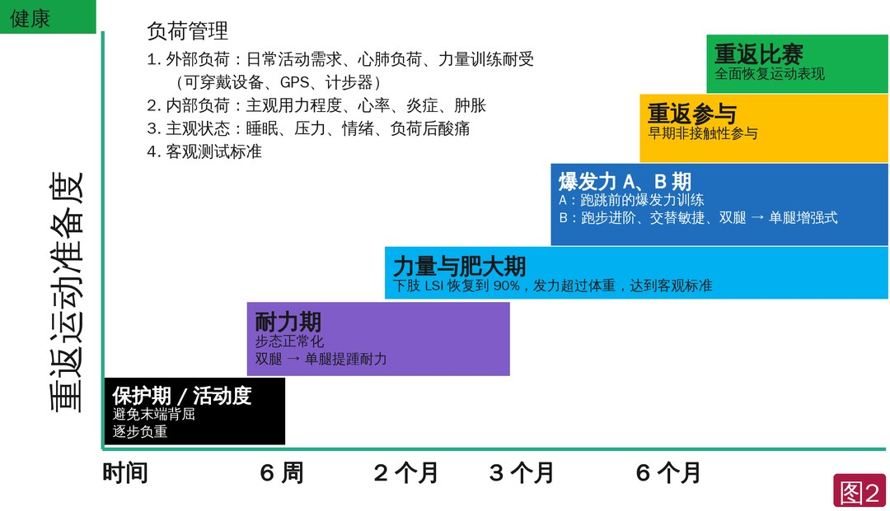
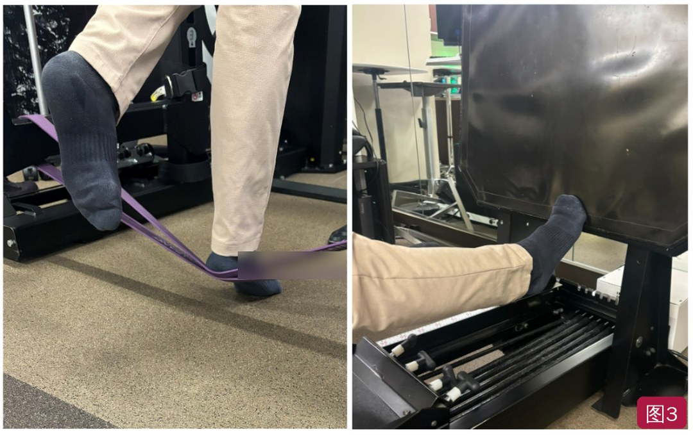

🔖原文首页（IJSPT 2026 年第 21 卷第 3 期）
📚 文献卡片
▪ 英文原题：Insertional Achilles Tendinopathy with Haglund’s Deformity: A Progressive Approach to Post-Operative Rehabilitation in Athletes（Haglund 畸形合并止点性跟腱病：运动员术后渐进式康复）
▪ 作者：Mark Dudek, DPT · Anastasia BJ Robinson, DPT · Meghan Newcomer, PA-C · C. Thomas Haytmanek, MD
▪ 机构：Howard Head 运动医学中心；Steadman 诊所；Steadman Philippon 研究所（美国科罗拉多州韦尔）
▪ 期刊：International Journal of Sports Physical Therapy（IJSPT）
▪ 年卷期：2026;21(3):312-323
▪ PMCID：PMC12952929
▪ 文章类型：临床评论 / 当前概念综述
▪ 证据级别：5 级
约 6% 的人一生中会有跟腱痛，其中约三分之一是止点性跟腱病（IAT），通常由跟腱负荷增加、尤其是在踝极度背屈位受载引起。跟骨后上方的骨性增大叫 Haglund 畸形（1927 年由 Patrik Haglund 描述）；畸形本身可以多年无症状，若同时出现疼痛和功能障碍，就称为 Haglund 综合征——包括跟骨后上方突起、跟骨后滑囊炎和止点性跟腱病。
保守治疗证据充分但耗时，一般要尝试 12～18 个月；仍无效时才考虑手术切除畸形。文献中的术后方案差异很大，很多长时间限制负重。本文提出一个基于标准、尽早负重的五阶段术后康复方案，适用于不需要大范围修复跟腱的健康运动员。
| 阶段 | 大致时间 | 重点 |
|---|---|---|
| 1 保护期 | 0～6 周 | 夹板 2 周 → CAM 靴，第 3 周起可耐受负重，5～6 周脱靴；前 4 周背屈不超过中立位（除非无痛）；足内在肌、低负荷跖屈、NMES、BFR |
| 2 耐力期 | 约 6 周～3 个月 | 穿鞋正常步态，恢复日常和工作步行量；高次数低负荷（15 次以上）；坐位单腿提踵 20 次 × 50% 体重 |
| 3 力量期 | 约 2～6 个月 | 大负荷、每组练到疲劳；多个 4～6 周周期；单腿提踵 LSI 90% |
| 4A/4B 爆发力期 | 约 3～6 个月以后 | 先节拍器回弹提踵、快速上台阶、下落深蹲，再跑步、双腿 → 单腿增强式 |
| 5 重返运动 | 约 6 个月以后 | 跳跃、敏捷、单腿跳测试和测力台指标达标，多学科讨论，医生同意 |
一句话概括：术后不必长期不负重：保护 2 周后逐步负重，再按耐力 → 力量 → 爆发力 → 重返运动，用客观标准决定何时进阶。
• 跟腱是人体最强、最粗的肌腱，由腓肠肌、比目鱼肌和跖肌的腱膜汇合而成，止于跟骨后上突起远侧 2 cm；跑跳时承受可达 12 倍体重的拉力
• 止点退变表现为平行胶原结构消失、纤维完整性丧失、脂肪浸润和毛细血管增生
• 极度背屈时止点被挤压在跟骨上，这是 IAT 的危险因素；但单纯背屈（如牵伸）很少致病，通常是在牵张-缩短周期中受压（如上坡跑）
• 骨刺在 IAT 患者中更常见（65%～80%，无足痛者 25%～35%）；骨刺大小可能比有无更重要：Chimenti 发现症状侧骨刺长 12.9 mm，无症状侧 8.9 mm，对照组 3.5 mm
• 病因未明，可能与高足弓、跟腱紧张和遗传有关；多见于中年女性；运动员中多见于跑者和穿压迫性鞋靴者（滑冰、高山/越野滑雪）；非运动人群常与紧而不合脚的皮鞋有关
• 主要靠病史和查体诊断：跟骨后区疼痛；跟骨后上方突起；在该水平跟腱内、外两侧压痛，常伴红、肿、热
• 被动或主动末端背屈诱发疼痛；休息后开始走路时最明显；常有疼痛步态
• 对 IAT 患者来说，台阶边缘提踵/下落（极度背屈）通常比次最大跳跃更痛
• 早期没有明确的影像诊断标准；后期侧位 X 线可见跟骨结节后上方骨性突起增大，伴滑囊肿胀；MRI 可见骨刺撞击跟腱
• 影像阳性不等于有症状：无症状者影像也可阳性，必须结合症状判断
• 运动治疗证据最强（A 级推荐）：过去认为离心训练是“金标准”，新证据显示收缩方式（向心、离心、等长）不如“重而慢”的负荷重要；一般从等长开始，按肌腱加载原则进阶
• IAT 特有：限制背屈角度的力量训练效果更好，例如提踵时足跟下垫毛巾卷，避免肌腱被挤压在跟骨上；但完全避免背屈可能产生反安慰剂效应、延长恢复——应按症状逐步增加背屈（图 1）
• 体外冲击波（B 级）：运动治疗无效时可选；一项系统评价中满意率 73.7%，离心训练 45.6%；但证据不一，可能只有短期效果
• 活动调整是关键：减少在牵张-缩短周期中大幅背屈的动作，如倒退跑、变向、陡坡上坡跑
• 鞋具：以减少骨突受压和摩擦为原则——足跟垫、无后跟或宽松的鞋、鞋帮低于骨突、内衬加垫。作者建议职业运动员不训练时穿无后跟的鞋/凉鞋/洞洞鞋；越野滑雪靴、室内骑行鞋等可去掉整个后帮，换成软氯丁橡胶
• 其他：牵伸、抗炎药、局部激素注射；保守治疗 85%～95% 能改善症状

🔖图1：提踵时逐步增加背屈角度——从足跟下垫毛巾卷（限制背屈），到平地，再到台阶边缘（背景海报字样已模糊处理）
• 先把跟腱向外侧牵开或部分剥离，切除跟骨后滑囊，再切除Haglund 畸形；可开放或内镜操作
• 内镜对术者要求更高，但并发症更少（5.3% vs 12.3%），康复更快，回归日常活动 6～12 周（开放 6～36 周）
• 跟腱止点剥离 ≤50% 时用上述方法；>50% 需要用锚钉修复——通常需短期不负重制动，负重限制最长 6 周
• 缝线锚钉结构：4 枚锚钉、无结、沙漏形高分子量聚乙烯缝线覆盖跟腱远端，加压面积大、稳定性好，可术后立即负重和活动；用于跟腱病变较重、清理较多时，术后不负重 2 周再开始负重
• 严重或慢性病例需要拇长屈肌腱转位加强，不在本文范围
表1 文献中 Haglund 术后方案的差异
| 研究 | 手术 | 术后方案 | 结果 |
|---|---|---|---|
| Pi 2021 | 开放 vs 内镜 | 两组相同：支具跖屈位固定 2 周，换可拆卸行走靴逐步负重；2 周开始被动/主动活动；4～6 周不受限行走；8～12 周完全恢复活动 | 内镜与开放手术效果相当 |
| Hoffman 2021 | Haglund 切除 + SpeedBridge 跟腱重建 | 后托夹板 2 周，换全天行走靴，部分负重 6 周；4 周开始物理治疗；8 周换普通鞋完全负重 | 未报告 |
| Yuen 2022（系统评价与荟萃分析） | 内镜 vs 开放 Haglund 切除 | 开放：制动 2～6 周，部分用铰链夹板或行走靴；不负重 0～6 周。内镜：石膏或支具最多 2 周，部分随后用行走靴；不负重 0～2 周 | 开放为 B 级推荐，回归日常和运动 6～36 周；内镜为 C 级（需更多研究），6～12 周 |
| Schneider 2000 | 开放切除跟骨后上部 | 13 例完全负重；36 例部分负重平均 4 周；10 例石膏 3～12 周 | 34 例完全缓解，7 例改善，7 例加重；平均 7.5 周复工，20.3 周回归运动 |
| Yodlowski 2002 | 外侧入路开放切除 | 行走靴 + 足跟垫，前 2 周足尖点地负重，之后行走靴、活动度训练和渐进负重 | 平均 6～9 个月回归运动 |
| Jerosch 2007 | 内镜（2 个入路） | 部分负重 2 周 | 按 Ogilvie-Harris 评分：41 例优，34 例良，3 例一般，3 例差 |
可见方案从立即部分负重到6 周不负重都有。本文的方案针对接受内镜或开放跟腱清理、组织条件和清理/锚钉固定足以允许早期负重的健康患者。
术后要用客观、基于标准、与生理愈合相一致的进阶：早期保护期控制炎症、减少萎缩、优化功能；之后按组织增殖和肌腱重塑推进（图 2）。

🔖图2：各康复阶段的大致时间（按原图中文重绘）。纵轴为重返运动准备度，横轴为时间；左上为贯穿全程的负荷管理要点
• 夹板不负重 2 周；2～6 周穿术后靴，第 3 周起可耐受负重，逐步恢复到术前每日步数；疼痛可以有，但不超过 3/10；5～6 周逐步脱靴，换支撑性好的鞋，可加足跟垫
• 前 4 周背屈只有无痛时才超过中立位，以免过度牵拉清理和重新锚定的跟腱
• 目标：控制水肿，恢复主动/被动肌肉募集，改善活动度，在疼痛可控下安全行走；如肿胀或疼痛 48～72 小时内不能恢复，就减少负荷
• 患者常已形成代偿模式——早期练足内在肌和足弓上提（足弓圆顶），为脱靴换鞋做准备
• 低负荷跖屈激活腓肠肌-比目鱼肌：弹力带跖屈、坐位提踵；NMES：30～50 Hz，脉宽 250～400 μs，最大耐受强度并有可见收缩，通断比 1:1～1:2（通 10 秒、断 10～20 秒）
• BFR：每周 2～3 次，袖带在小腿近端，压力为肢体阻断压的 60%～80%，低负荷，每个动作 4 组、每组 15～30 次，组间休息 30～60 秒
• 训练和日常活动中都避免极度背屈
• 恢复各方向的负重活动度，穿双鞋正常行走；缓冲好的鞋更舒适，可沿用保守治疗中的鞋具改良保护切口；轻度肿胀常见，可穿压力袜
• 中足、距下、跟舟关节活动不足时用手法；记录每日步数，先达到原来的日常和工作步行量，再加大力量训练
• 耐力训练按 ACSM：15 次以上、低负荷，主观用力 7/10，约 40%～60% 1RM；如果向心/离心跖屈和背屈有症状，可先做缩短位和延长位的等长（坐位提踵、无痛背屈范围内的深蹲保持，10～30 秒）
• 正常行走需要约 3.3 倍体重的跖屈力，单腿提踵约需 3 倍体重——能做单腿提踵是最重要的耐力目标
• 从伸膝开链抗阻和坐位跖屈开始；负重坐位单腿提踵是早期安全加载方式；能以 50% 体重完成 20 次坐位单腿提踵，通常就有能力做站立单腿提踵；再按图 1 逐步增加背屈
• 作者认为这是最重要的阶段：刺激神经肌肉适应，抵消前 6 周的萎缩；建议安排多个 4～6 周的周期化训练块
• 肥大：每组 8～12 次，主观用力 8～9/10，约 40%～60% 1RM 或最大随意等长收缩，关键是每组练到完全疲劳
• 力量：每组 1～5 次，>60%～70% 1RM，主观用力 8～9/10；开始大负荷，收缩方式由治疗师决定
• 按 Silbernagel 的疼痛监测模型，训练中和之后 24～48 小时监测跟腱疼痛和酸痛；力量通常每 4～6 周提高 10%～15%
• 步行时跟腱约承受 3 倍体重，跑步时可达 12 倍。引入冲击前先练速度和爆发力
• 节拍器下双腿回弹提踵（约 2.5 倍体重）结合耐力和牵张-缩短刺激；快速低台阶上台（>2.9 倍体重）练加速；下落深蹲或反向纵跳（3.4 倍体重）练减速——都远低于真正跳跃（双腿跳 4.8 倍，单腿跳和向前跳 6.7～7.1 倍）
• 需要更慢进阶时，可在腿举机上以较低体重负荷进行，或用粗弹力带减重（图 3）

🔖图3：减重提踵——用弹力带（左）或腿举机（右）降低负荷（弹力带品牌字样已模糊处理）
• 跑和跳，建立最大力量、反应力量和爆发力；建议在治疗师指导下至少 4～6 周敏捷、爆发力和增强式训练后再测试
• 用负荷量 = 组数 × 次数 × 重量控制触地次数和重复次数，保证恢复；不要同时增加多个变量，以免肌腱激惹；同时继续力量训练
• 早期跳跃可用粗弹力带助力，减轻起跳和落地负荷；增强式从双腿到单腿，再到多平面
所有爆发力阶段标准达标后，完成表 2 的测试组合（跑、敏捷、爆发力和单腿跳），不限于这些测试，应加入最贴近该项目需求的测试，个体化决定能否重返运动。
表2 康复进阶标准（Haglund 畸形切除 + 止点跟腱清理/修复，健康运动员）
| 保护期 0～6 周 | |
| 时间安排 | • 0～2 周：夹板固定 • 3～4 周：CAM 靴内由部分负重过渡到完全负重 • 5～6 周：逐步脱靴 • 背屈超过中立位会痛则不要超过 |
| 进阶标准 | • 切口处理 • 主动活动度完全恢复 • 无痛时可在各方向抗阻和加载（弹力带、坐位等长、提踵等） • 按医嘱恢复步态 • 经医生同意可开始 BFR |
| 耐力期 | |
| 要求 | 不用助行器和靴子正常行走，能达到原来的日常和工作步行量 |
| 进阶标准 | • Y 平衡测试：综合评分 >90%，各方向距离与健侧相差 4 cm 以内 • 负重弓步测试：LSI >50%～75% • 双腿提踵高度：LSI >90% • 能完成单腿提踵 |
| 力量期 | |
| 进阶标准 | • 负重弓步测试：LSI 85% • 股四头肌、腘绳肌 LSI >90%（如能测，股四头肌力量/体重：女 >80%，男 >85%） • 髋内收、外展 LSI >90% • 内翻/外翻力量比 >90% • 单腿提踵测试：高度和耐力 LSI 90%，然后进阶到大负荷（手持重物单腿提踵） • 单腿深蹲耐力：LSI >90% 或 1 分钟至少 30 次 • 下肢力量训练：技术良好下加负荷，目标 >伤前负荷的 90% |
| 测力台目标 | 建立站立位跖屈峰值功率/体重基线，早期目标 >1.5 倍体重 |
| 爆发力 A 期 跑跳前 | |
| 内容 | 引入速度和爆发力，在跑跳前先具备加速和减速能力。示例（按患者和项目选择）： |
| 示例练习 | • 双腿/单腿回弹提踵：如 130～150 次/分 × 20 秒 • 加速：快速提踵保持或垫步保持，可先在腿举机上低负荷（单/双腿） • 减速：腿举机下落深蹲（小于体重负荷）→ 站立双腿下落深蹲 → 分腿蹲 |
| 测力台目标 | • 跖屈峰值功率基线 >1.5～2 倍体重 • 反向纵跳高度和反应力量指数基线 >第 30～50 百分位 |
| 爆发力 B 期 重返参与 | |
| 内容 | 经医生同意、在物理治疗师/运动防护师指导下进行安全的场地训练；在体能教练和队内教练配合下，把牵张-缩短/增强式进阶加入现有的力量和心肺训练 |
| 增强式进阶（每阶段 1～2 周） | • ① 交替性任务：绳梯、跨步跳、跑步进阶 • ② 双腿跳：反向纵跳，向前、侧向、向后、90° 转体跳，必要时加跳箱 • ③ 单腿跳：向前、侧向、向后、转体，必要时加跳箱 |
| 测力台目标 | • 复测站立跖屈峰值功率 >2.5～2.75 倍体重，短跑运动员可达 4 倍 • 复测反向纵跳高度 >第 50 百分位 • 适当时建立双腿跳深基线 |
| 重返运动 | |
| 内容 | 重返运动和运动表现阶段：主观和心理准备评分达标；选择反映项目需求的测试；多学科讨论康复和场上表现；医生同意 |
| 单腿跳和爆发力测试 | 水平跳或三级跳远（距离 LSI >90%）、30 秒侧向跳（>55 次）、跳箱或 8 字跳（时间 LSI >90%）、T 形敏捷测试（时间 LSI >90%） |
| 测力台目标 | • 双腿跳深：反应力量指数 >第 50 百分位（精英运动员 >第 85 百分位），再进阶到 • 单腿跳深：反应力量指数 >第 50 百分位（精英运动员 >第 85 百分位） |
LSI：肢体对称指数；BFR：血流限制；CAM 靴：可控踝关节活动靴。
• 证据级别低：5 级临床评论，方案来自作者机构经验和对文献的整合，没有用患者数据验证早期负重方案的安全性和效果
• 亮点：给出从夹板到重返运动的完整路径，有具体的 NMES、BFR 参数、各阶段负荷强度和大量客观进阶指标（测力台功率、反应力量指数、单腿跳测试），并给出各练习的跟腱负荷倍数
• 适用范围有限：只针对跟腱剥离不多、可以早期负重的健康运动员；跟腱剥离 >50%、需要锚钉修复或拇长屈肌腱转位的患者不适用
• 前后不一致：文中说锚钉结构“可立即负重和活动”，紧接着又说术后不负重 2 周；表 1 中 Hoffman 一行写“部分负重 6 周、8 周换鞋完全负重”，与正文本方案差别很大但未讨论
• 参数可商榷：耐力期写 15 次以上“主观用力 7/10、40%～60% 1RM”，肥大期也写 40%～60% 1RM，两阶段强度区分不清；测力台“百分位”标准缺少明确的常模来源
• 笔误：图 3 图注“heal raise”应为 heel；正文“may be an performed”等
① 先保守：重而慢的加载 + 逐步增加背屈 + 活动调整 + 鞋具改良，至少 6～18 个月
② 0～6 周：夹板 2 周 → 靴内第 3 周起负重 → 5～6 周脱靴；前 4 周背屈不过中立；NMES、BFR、足内在肌
③ 耐力期：正常步态，坐位单腿提踵 50% 体重 × 20 次 → 站立单腿提踵
④ 力量期：大负荷练到疲劳，多个 4～6 周周期，单腿提踵 LSI 90%
⑤ 爆发力期：先回弹提踵、快速上台阶、下落深蹲，再跑和跳，双腿 → 单腿
★ 重返运动：单腿跳测试 LSI >90%、反应力量指数达标、多学科讨论和医生同意
欢迎关注骨科康复小黄公众号，获取更多物理治疗的专业知识！
📄参考文献：
Dudek M, Robinson AB, Newcomer M, Haytmanek CT. Insertional Achilles Tendinopathy with Haglund’s Deformity: A Progressive Approach to Post-Operative Rehabilitation in Athletes. Int J Sports Phys Ther. 2026;21(3):312-323. PMCID: PMC12952929.
文中 3 张图片均来自原文：图 2 按原图中文重绘，图 1 背景海报和图 3 弹力带品牌字样已模糊；表 1～2 已译为中文，仅用于学术交流。